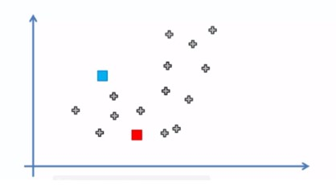
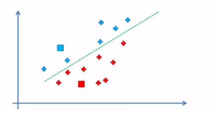
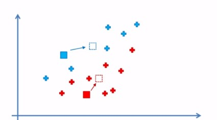
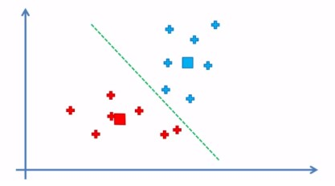
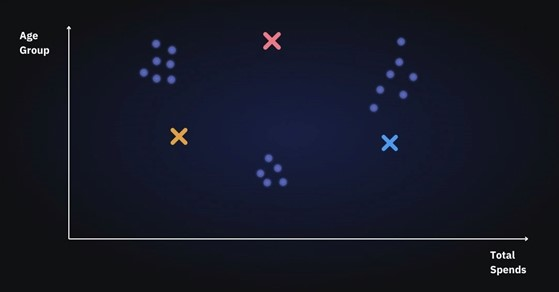
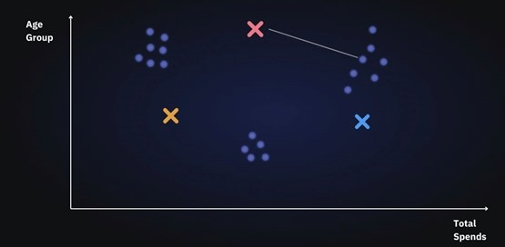
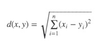
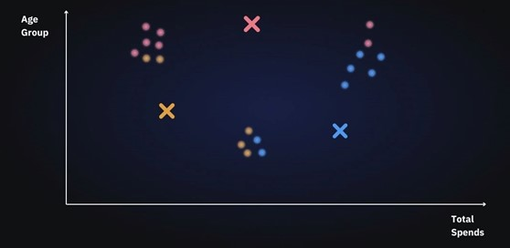
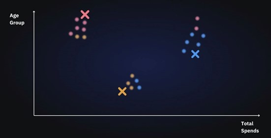
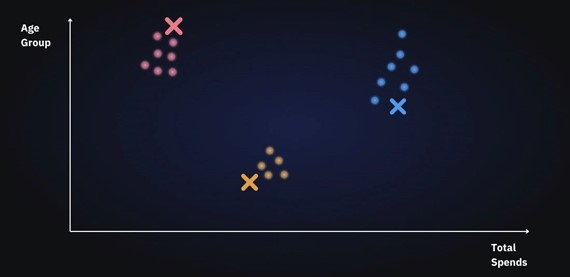

Step 1: Initialization (Choosing Initial Centroids) - The algorithm starts by randomly selecting K initial centroids from the dataset. These centroids serve as the initial reference points for forming clusters. Proper initialization can significantly influence the quality of the final clusters and the speed of convergence.

Step 2: Assignment (Assigning Data Points to the Nearest Centroid) - Each data point in the dataset is assigned to the nearest centroid based on a chosen distance metric, typically the Euclidean distance. This step partitions the dataset into K clusters, where each data point belongs to the cluster with the closest centroid.

Step 3: Update (Recalculating Centroids) - Once all data points are assigned to clusters, the centroids are recalculated. The new centroid of each cluster is the mean of all data points within that cluster. This step adjusts the centroids to better represent the data points in their respective

Step 4: Repeat Until Convergence - Steps 2 and 3 are repeated iteratively until the centroids no longer change significantly between iterations, indicating convergence. Alternatively, a predefined number of iterations can be set as the stopping criterion. Convergence ensures that the clusters are stable and optimally partitioned.

Example 1: Consider a simple example with a small dataset and K=3:
1. Initialization - Select 3 initial centroids randomly from the dataset:
- Centroid 1: (1, 2)
- Centroid 2: (5, 8)
- Centroid 3: (9, 4)
2. Assignment (First Iteration) - Calculate the distance of each data point to the centroids and assign them to the nearest centroid:
- Data point (2, 3) -> nearest to Centroid 1
- Data point (6, 7) -> nearest to Centroid 2
- Data point (8, 5) -> nearest to Centroid 3
3. Update - Recalculate the centroids based on the assigned data points:
- New Centroid 1: Mean of points in cluster 1 (e.g., (2, 3), (1, 2))
- New Centroid 2: Mean of points in cluster 2 (e.g., (6, 7), (5, 8))
- New Centroid 3: Mean of points in cluster 3 (e.g., (8, 5), (9, 4))
4. Subsequent Iterations- Repeat the assignment and update steps. In each iteration, data points may change their cluster assignment, and centroids will be recalculated:
- Data point (3, 3) might move from cluster 1 to cluster 2 if Centroid 2 becomes closer.
5. Convergence - The algorithm continues until the centroids stabilize and no longer change significantly:
- Final Centroids:
- Centroid 1: (1.5, 2.5)
- Centroid 2: (5.5, 7.5)
- Centroid 3: (8.5, 4.5)
Example 2: Let’s select K=3.
1. Initialization (Choosing Initial Centroids):
We select random data points and define them as centroids for each cluster. We will initialize 3 centroids in the dataset:

2. Assignment (Assigning Data Points to the Nearest Centroid)
Now that centroids are initialized, the next step is to assign data points Xn to their closest cluster centroid Ck

In this step, we will first calculate the distance between data point X and centroid C using Euclidean Distance metric.

Then choose the cluster for data points where the distance between the data point and the centroid is minimum.

3. Update (Recalculating Centroids)
Next, we will re-initialize the centroids by calculating the average of all data points of that cluster.

4. Repeat Until Convergence
We will keep repeating steps 3 and 4 until we have optimal centroids and the assignments of data points to correct clusters are not changing anymore.

This iterative process ensures that the data points are grouped into clusters with minimal within-cluster variance and optimal separation between clusters.